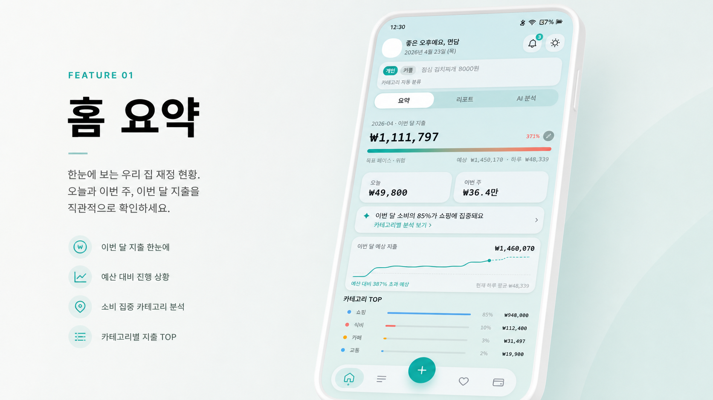
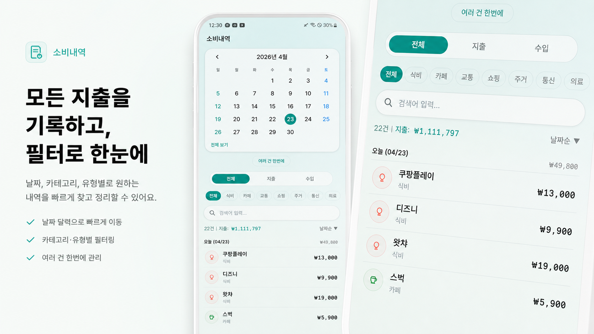
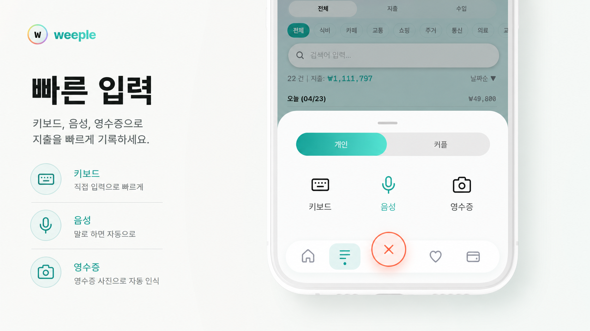
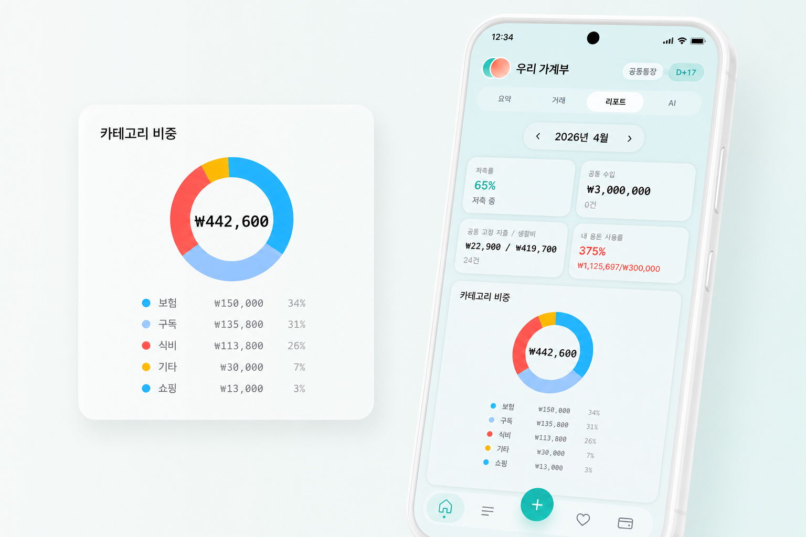
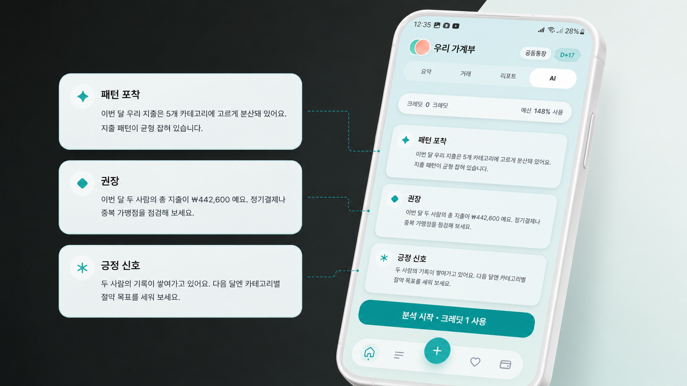
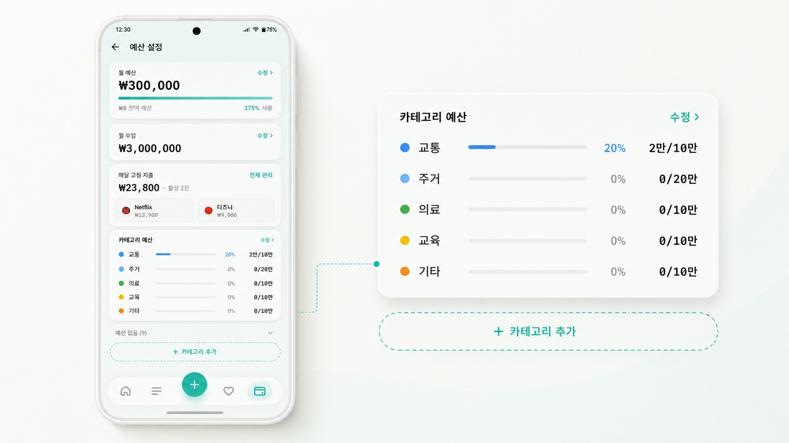

01
기록은 한 명이 하는데, 돈은 둘이 씁니다
한 사람이 모든 입력을 떠안으면 가계부는 관리 도구가 아니라 숙제가 됩니다.
그래서 weeple은 더 많은 차트보다, 둘이 덜 피곤해지는 구조를 먼저 봅니다.
한 사람이 모든 입력을 떠안으면 가계부는 관리 도구가 아니라 숙제가 됩니다.
누가 더 냈는지보다 더 어려운 건 그 이야기를 꺼내는 순간입니다.
각자 쓴 돈과 함께 쓴 돈이 섞이면 다음 소비를 줄일 기준도 흐려집니다.
월 지출, 오늘 소비, 이번 주 흐름, 예산 위험 신호를 첫 화면에서 바로 확인합니다. 숫자를 숨기지 않고, 다음 대화를 시작할 근거로 보여줍니다.



소비내역은 날짜와 카테고리로 찾고, 입력은 키보드·음성·영수증 흐름으로 짧게 끝냅니다. 개인 지출과 커플 지출은 기록 단계부터 분리합니다.
리포트는 카테고리 비중과 공동 지출을 보여주고, AI는 패턴 포착·권장·긍정 신호를 짧게 정리합니다. 판단을 대신하기보다 둘이 이야기할 출발점을 만듭니다.


월 예산과 수입, 매달 빠지는 고정 지출, 카테고리별 한도를 같은 화면에서 봅니다. 어디서 새는지보다 어디를 조정할지 빠르게 보이게 합니다.

시작은 멋진 금융 서비스를 만들겠다는 계획이 아니었습니다. 둘이 같이 쓰는 돈을 이야기할 때마다, 숫자보다 먼저 표정이 굳는 순간이 싫었습니다.
그래서 weeple은 화려한 금융 기능보다 먼저, 둘 사이의 경계를 덜 다치게 하는 구조에서 시작했습니다.
Android 공개 테스트부터 시작합니다. 지금은 작지만, 둘이 쓰는 돈을 덜 피곤하게 만드는 방향은 분명합니다.
공개 테스트 참여